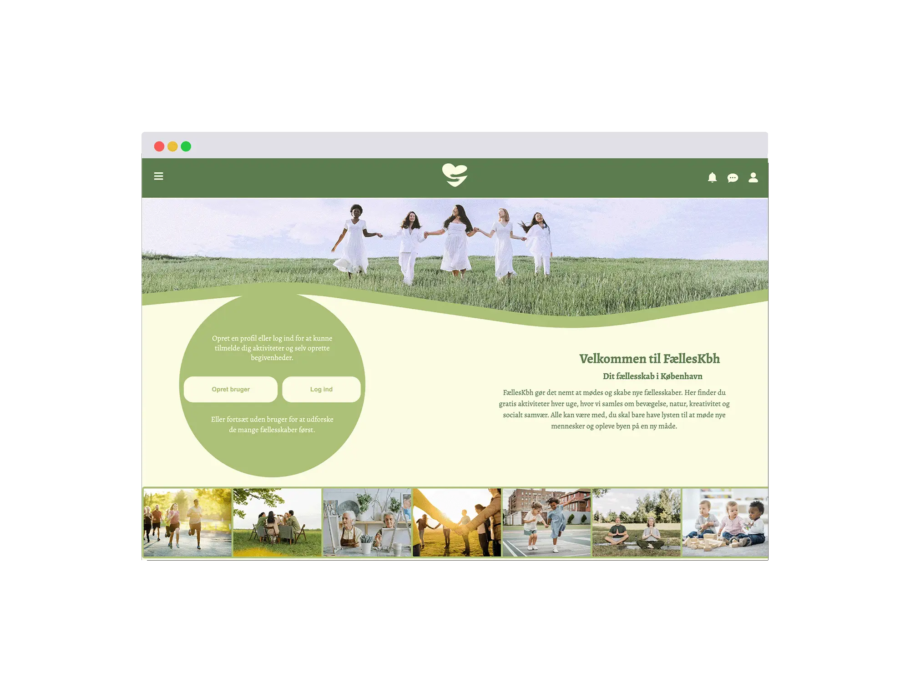
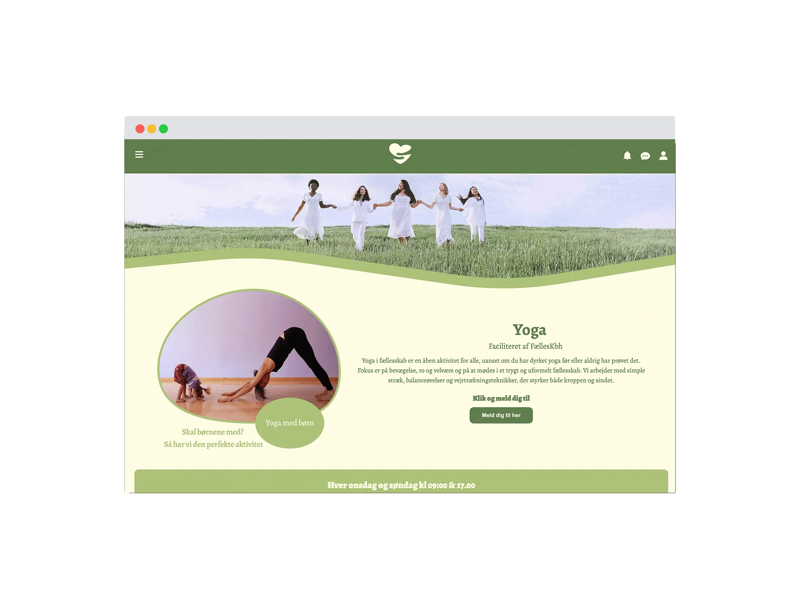
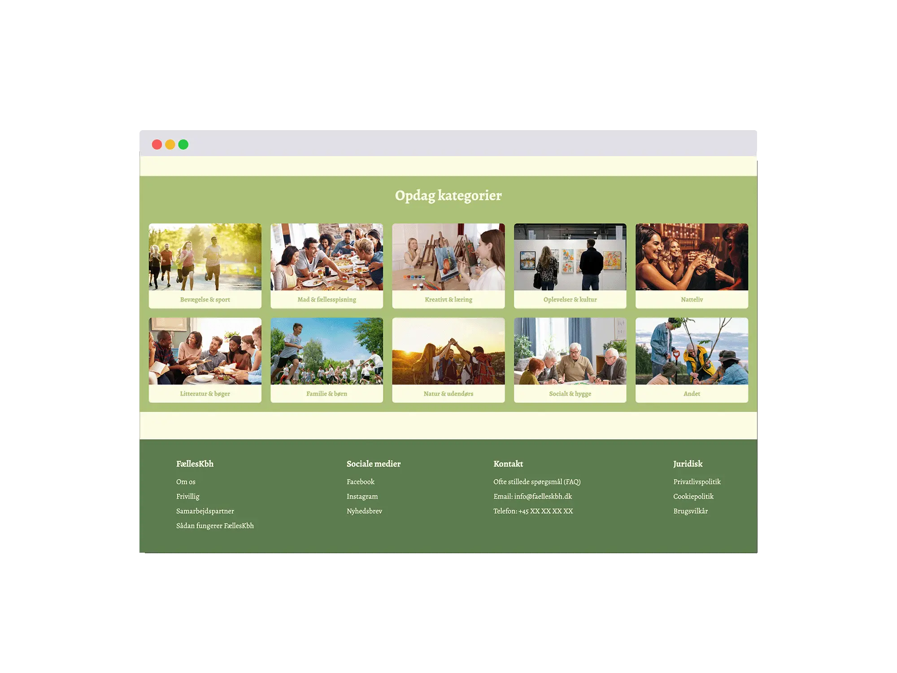
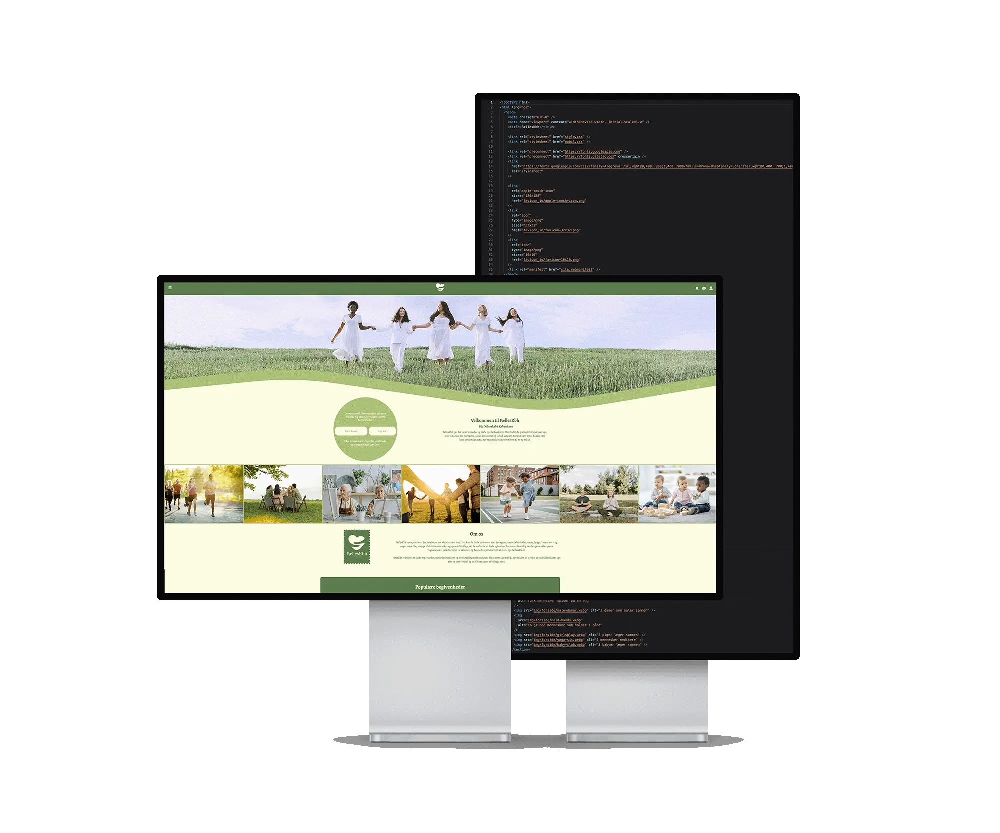
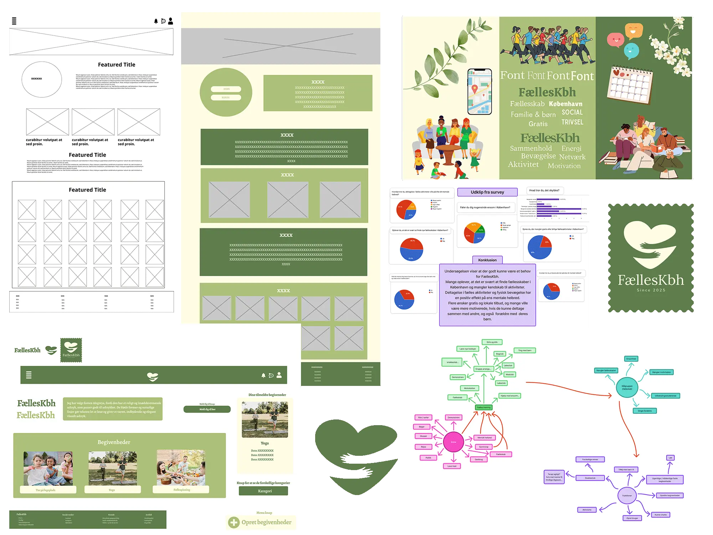
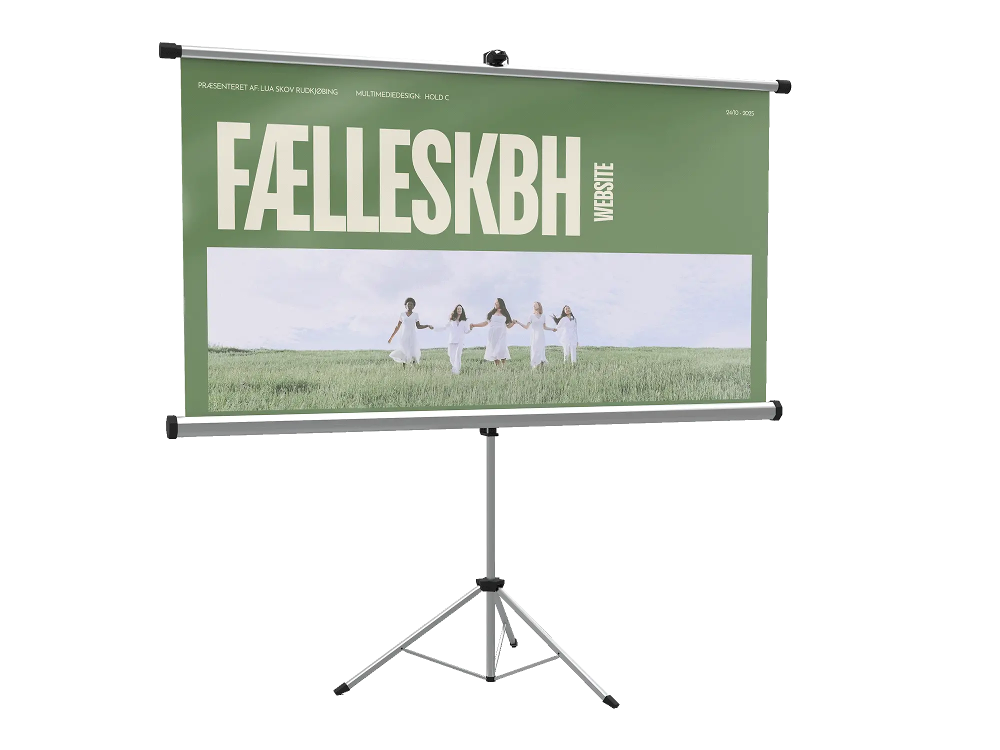

Fælleskbh
Se hjemmesiden her


Opgave:
Opgaven gik ud på at designe en hjemmeside ud fra et selvvalgt interesse emne, undersøge behovet og formålet for brugeren samt lave en interaktiv Figma-prototype, hvor mindst tre sider efterfølgende blev kodet.
Løsning:
Jeg har udviklet en digital platform, FællesKbh, der samler sociale aktiviteter ét sted og gør det nemt at deltage i fællesskaber i København. Platformen tilbyder faste, gratis ugentlige aktiviteter drevet af frivillige med fokus på bevægelse, natur, læring, kreativitet og fællesskab. Det visuelle udtryk består af rolige, naturlige farver og bløde former for at skabe en tryg og imødekommende stemning, og der er brugt royalty free billeder af fælles aktiviteter for at gøre formålet tydeligt og relaterbart.

Proces:
Processen startede med idéudvikling via mindmaps, hvor fællesskab, fysisk sundhed og mental trivsel blev kombineret til idéen om en platform med fælles aktiviteter i København. Derefter lavede jeg research gennem desk research, survey og interviews, som viste et behov for bedre overblik over sociale fællesskaber og gratis, lokale aktiviteter. På baggrund af dette udarbejdede jeg et moodboard og udviklede wireframes, logo og UI-elementer, som blev samlet i en interaktiv prototype og løbende testet. Til sidst kodede jeg tre udvalgte sider af sitet, herunder forside, begivenhedsside og en aktivitetsside samt en slide-in menu.
Se proces i Figma her
Feedback og refleksion:
Den færdige hjemmeside stemmer godt overens med prototypen og det ønskede visuelle udtryk. Feedbacken viste, at formålet hurtigt er tydeligt, og at sitet virker autentisk. Billedstørrelserne var for store, og sitet fungerede kun optimalt på bestemte skærmstørrelser. Jeg skulle have haft en mobile first-tilgang, bedre til tidligere skitsering og finjusteret siden.
Læring:
Gennem opgaven har jeg fået erfaring med UX- og UI-metoder som idéudvikling, prototyping og iterative designprocesser. Jeg har arbejdet med testmetoder som femsekunders-test, tænke-højt-test og Lighthouse, som har givet indsigt i brugeroplevelse og usability. Opgaven har styrket mine Figma-færdigheder, arbejdet med interaktive elementer som slide-in menuer samt min forståelse for billedoptimering i forhold til performance. Samlet set har projektet givet mig en bedre forståelse for samspillet mellem research, design, test og teknisk implementering.
